Introduction to Finite Volume Method
Table of Contents
1. 偏微分方程式 (PDE) 簡介
1.1. 流體力學的控制方程式
在計算流體力學 (Computational Fluid Dynamics, CFD) 中，常見的控制方程式是偏微分方程式 (Partial Differential Equations, PDEs)，例如 Navier Stokes equations:
\[ \nabla \cdot \mathbf{u} = 0 \]
\[ \frac{\partial\mathbf{u}}{\partial t} + \mathbf{u}\cdot\nabla \mathbf{u} = -\frac{1}{\rho} \nabla p + \mathbf{g} + \nu \nabla^{2}\mathbf{u} \]
若是無黏性的理想流體，其控制方程式為雙曲線型 (hyperbolic) PDE。但若考慮黏滯項，則可能引入其他型態的 PDE。
1.2. PDE 的分類
PDE 的分類主要基於其判別式（discriminant）。針對二階線性 PDE：
\[ A \frac{\partial^2 u}{\partial x^2} + B \frac{\partial^2 u}{\partial x \partial y} + C \frac{\partial^2 u}{\partial y^2} + \cdots = 0 \]
根據 \(D\) 的符號可分類如下：
| 判別式 \(D = B^2 - 4AC\) | 類型 | 幾何對應 | 數學意義 | 物理例子 |
|---|---|---|---|---|
| \(D < 0\) | Elliptic | 橢圓 | 無實特徵線 | Laplace equqaion，Poisson equation |
| \(D = 0\) | Parabolic | 拋物線 | 重合的特徵線 | Heat equation |
| \(D > 0\) | Hyperbolic | 雙曲線 | 兩條實特徵線 | Wave equation |
1.3. 常見 PDE 範例
橢圓型： Poisson equation 或 Laplace equation (\(f = 0\))
\[ \nabla^2 \phi = f \]
- 應用：重力場計算、勢流理論、靜電分佈等。
拋物線型：擴散方程式 (Diffusion equation)
\[ \frac{\partial u}{\partial t} = \nu \nabla^2 u \]
- 應用：黏滯性擴散、熱傳導等。
雙曲線型：線性對流方程式（Linear advection equation）
\[ \frac{\partial u}{\partial t} + A \frac{\partial u}{\partial x} = 0 \]
或波動方程式 (Wave equation)
\[ \frac{\partial^2 u}{\partial t^2} = c^2 \frac{\partial^2 u}{\partial x^2} \]
- 應用：波動問題，如聲波、水波等
1.4. 雙曲線型 PDE 範例：Wave Equation
考慮一維波動方程式：
\[ \frac{\partial^2 u}{\partial t^2} = c^2 \frac{\partial^2 u}{\partial x^2} \]
其中 \(u=u(x,t)\), 表示波在時間 \(t\) 與位置 \(x\) 上的變化，\(c\) 為波速。
若給定初始條件：
\[ u(x,0) = f(x), \quad u_t(x,0) = g(x) \]
則波動方程的通解可由 D'Alembert 解法給出：
\[ u(x,t) = \frac{1}{2} \left[ f(x - ct) + f(x + ct) \right] + \frac{1}{2c} \int_{x - ct}^{x + ct} g(s) \, ds \]
其中
- 第一項表示從初始形狀 \(f(x)\) 沿左右兩側傳播的部分；
- 第二項表示由初始速度 \(g(x)\) 所引發的波動。
特徵線的物理意義是：初始擾動會沿著 \(x = x_0 \pm ct\) 傳播，也就是以速率 \(c\) 向左右兩側移動 (圖 1)。 這表示：
- 解在 \(x\)-\(t\) 平面中沿著這兩條特徵線傳遞；
- 初始條件的影響只會在「特徵線所界定的區域」內影響解；
- 有限速度傳播 (finite propagation speed)：擾動不會即時影響全域，而是以速度 \(c\) 傳遞。
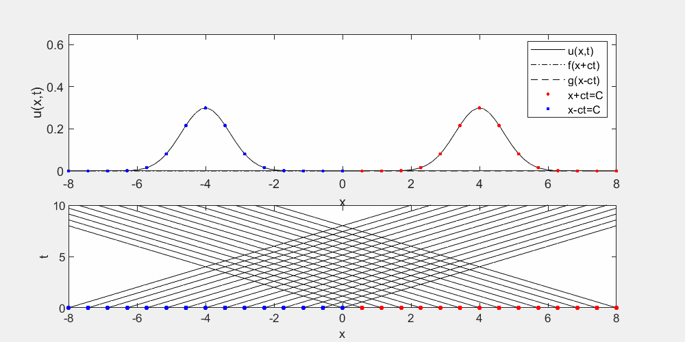
Figure 1: 波動方程式之解與特徵線。
在 \(x\)-\(t\) 平面上：
- 任一點 \((x_0, t_0)\) 的解會受到初始資料在區間 \([x_0 - ct_0, x_0 + ct_0]\) 內的影響；
- 這個區域由兩條特徵線構成，稱為「影響區 (domain of dependence)」；
- 解本身也只會影響落在 \(x_0 \pm ct\) 所界定的範圍內的點 (未來的「影響區域」)。
雙曲型 PDE 常與無耗散的傳播問題相關聯。當其特徵線為實數（如圖 2 所示）時，表示解函數 \(u\) 在某一點 P 處所受到的擾動，只會影響特徵線所包圍的區域 CPD 中的解；反過來說，P 點的解也只會受到位於區域 APB 的擾動所影響。此外，若初始條件設定在 \(t = 0\) 的時刻（即圖 2 中的 AB 線上），這些初始條件就足以唯一決定點 P 的解。
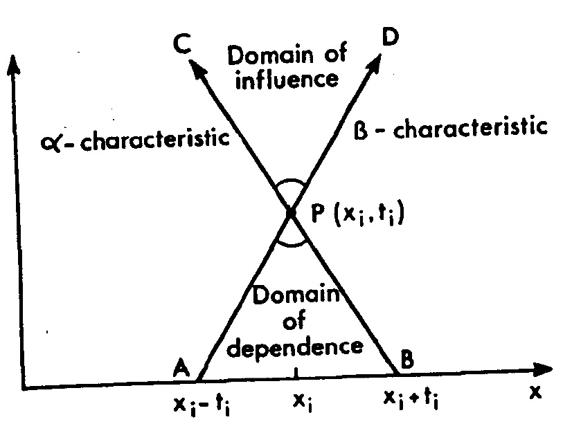
Figure 2: 波動方程式之特徵線與影響區域。
1.5. 拋物線 PDE 範例：Diffusion Equation
考慮一維擴散方程式，其中 \(D\) 為擴散係數：
\[ \frac{\partial u}{\partial t} = D\frac{\partial^2 u}{\partial x^2} \]
若邊界為無窮域 \((-\infty \le x \le \infty)\)，且初始條件為高斯分佈的點源 (point source) 擴散:
\[ u_{0}(x) = \frac{1}{\sqrt{2\pi}} e^{-\frac{x^2}{2}} \]
其解可由 Green's function (格林函數) 的 convolution integral (捲積或摺積) 求得:
\[ u(x,t) = \int_{-\infty}^{\infty} G(x-z, t) u_{0}(z) \,dz \]
其中 \(G\) 為一維擴散方程式的 Green's function:
\[ G(x - z, t) = \frac{1}{\sqrt{4\pi D t}} \exp\left(-\frac{(x - z)^2}{4Dt}\right) \]
以下爲此解隨時間變化之程式碼，可看出 \(u\) 隨著時間而逐漸擴散的現象：
# begin_src python :file diffusion.png
import numpy as np
import matplotlib.pyplot as plt
from mpl_toolkits.mplot3d import Axes3D
# 擴散係數 D
D = 1.0
# 空間與時間範圍
x_vals = np.linspace(-10, 10, 100)
t_vals = np.linspace(0.1, 5, 50) # 避免 t=0，從 0.1 開始
# 建立 x-t 平面網格
X, T = np.meshgrid(x_vals, t_vals)
U = np.zeros_like(X)
# 定義初始條件為標準常態分布 φ(z)
def phi(z):
return (1 / np.sqrt(2 * np.pi)) * np.exp(-z**2 / 2)
# 計算 u(x,t)
for i in range(T.shape[0]):
for j in range(T.shape[1]):
t = T[i, j]
x = X[i, j]
# 積分變數 z 的範圍
z = np.linspace(-10, 10, 500)
phi_z = phi(z)
G = (1 / np.sqrt(4 * np.pi * D * t)) * np.exp(-(x - z)**2 / (4 * D * t))
integrand = phi_z * G
U[i, j] = np.trapz(integrand, z)
# 繪製三維圖
fig = plt.figure(figsize=(10, 6))
ax = fig.add_subplot(111, projection='3d')
ax.plot_surface(X, T, U, cmap='viridis')
ax.set_xlabel('x')
ax.set_ylabel('t')
ax.set_zlabel('u(x,t)')
ax.set_title('Diffusion of u(x,t) over time')
plt.tight_layout()
plt.savefig("diffusion.png")
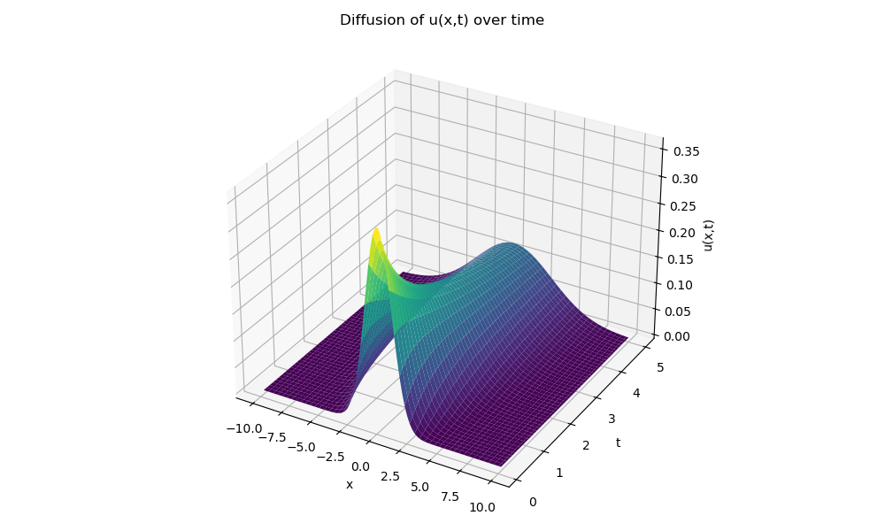
Figure 3: 擴散方程式之解 \(u(x,t)\) 隨時間之擴散情形。
此 PDE 其僅有一個特徵線方向：\(dt/dx = 0\)。特徵線在拋物型 PDE 中並不像在雙曲型那樣扮演重要角色。對於拋物型 PDE，並不存在與特徵線法 (method of characteristics) 相對應的方法。如果將計算網格沿著局部特徵線排列，是無法推進解隨時間演化的。
拋物線型問題的典型特徵是其解隨時間向前推進，同時在空間中呈現擴散特性。因此若在圖 4 中的點 P 處施加擾動，則該擾動會影響所有 \(t \geq t_i\) 的計算域區域。然而擾動的強度會隨著離開 P 的距離迅速衰減。
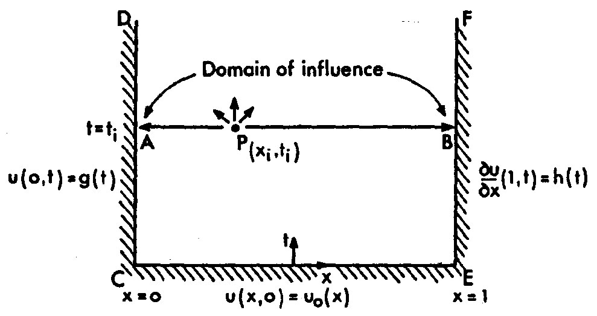
Figure 4: 拋物線型 PDE 的計算區域。
1.6. 橢圓型 PDE 範例：Laplace Equation
最簡單的橢圓型 PDE 範例為不可壓縮勢流 (potential flow) 之控制方程式 Laplce equation:
\[ \frac{\partial^2 \phi}{\partial x^2} + \frac{\partial^2 \phi}{\partial y^2} = 0 \]
若此問題之定義域為單位正方形 \( [0, 1] \times [0, 1] \)，邊界條件為：
- 下邊界：\( \phi(x,0) = \sin(\pi x) \)
- 上邊界：\( \phi(x,1) = \sin(\pi x)\, e^{-\pi} \)
- 左右邊界：\( \phi(0,y) = \phi(1,y) = 0 \)
此問題的解析解為：
\[ \phi(x,y) = \sin(\pi x)\, e^{-\pi y} \]
下列 Python 程式碼將繪出解析解的三維圖，顯示解如何在空間中變化。
import numpy as np
import matplotlib.pyplot as plt
# Create grid
nx, ny = 100, 100
x = np.linspace(0, 1, nx)
y = np.linspace(0, 1, ny)
X, Y = np.meshgrid(x, y)
# Analytical solution
phi = np.sin(np.pi * X) * np.exp(-np.pi * Y)
# Plot
plt.figure(figsize=(6, 5))
contour = plt.contourf(X, Y, phi, levels=50)
plt.colorbar(contour, label="Potential φ")
plt.title(r"Analytical Solution: $\phi(x,y) = \sin(\pi x) e^{-\pi y}$")
plt.xlabel("x")
plt.ylabel("y")
plt.tight_layout()
plt.savefig("laplace_analytical.png")
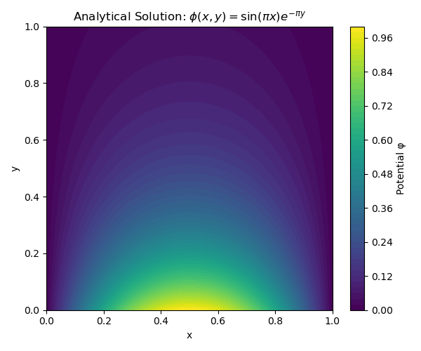
Figure 5: 解析解 \( \phi(x,y) = \sin(\pi x)\, e^{-\pi y} \) 在單位方形內的分佈情形。
對於此形式的二階橢圓型 PDE，存在一項重要的最大值原理 (maximum principle)。該原理指出，解函數 \(\phi\) 的最大值與最小值必定發生在邊界上，除非 \(\phi\) 是一個常數解 (trivial case)。此一性質在數值模擬中具有實用價值，因為它可用來檢查計算所得解是否合理，是否符合橢圓型 PDE 的基本性質。
對於一般形式的二階橢圓型 PDE，即滿足條件 \(4AC < B^2\)，則其特徵線為複數，無法在實數域的計算區域中具體顯示。對於流體力學中的橢圓型問題而言，尋找特徵線的方向並無實際意義，因為這類問題的解通常與特徵方向無直接關聯。
橢圓型 PDE 最重要的特徵之一是：當在某一內部點 P（如圖 6 所示）引入一個微小擾動時，這個擾動會影響整個計算域中的所有點。雖然距離 P 越遠，擾動的影響程度會逐漸減弱，但它仍舊是全域性影響。這意味著，在求解橢圓型問題時，必須考慮整個計算區域的邊界條件與整體配置。
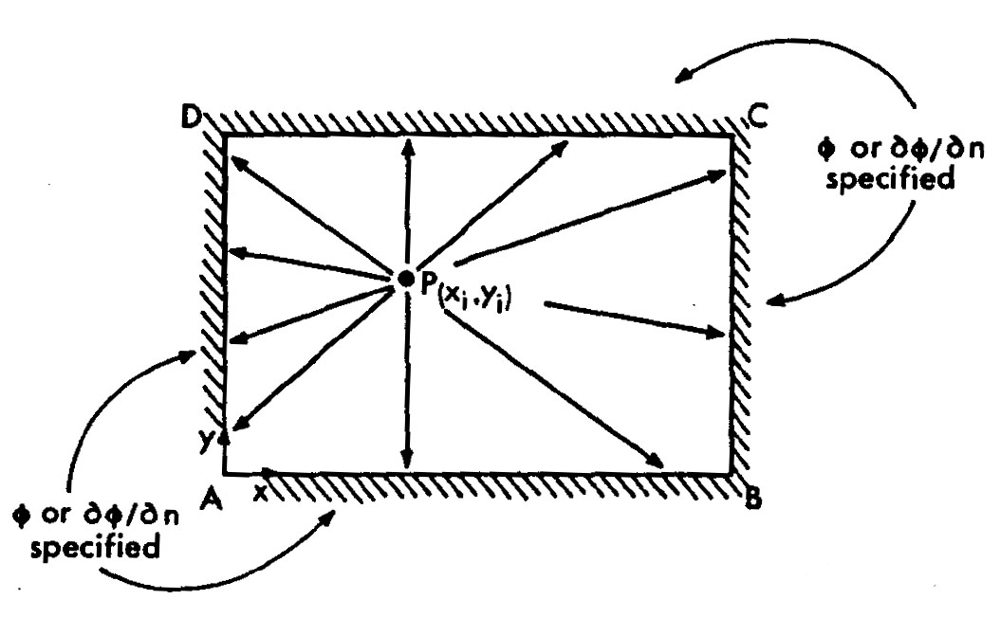
Figure 6: 橢圓型 PDE 的計算區域。
這與拋物型與雙曲型 PDE 形成對比：後者通常可以自初始條件出發，逐步向前推進地求解。而橢圓型 PDE 則不適用這種「前行計算（marching）」方法。
此外，若邊界條件存在不連續，橢圓型 PDE 的解在內部會自然地將這些不連續「平滑化」，展現其強烈的空間耦合特性。
1.7. Navier-Stokes Equations 的分類
Navier-Stokes 方程式為非線性二階偏微分方程，其分類依據具體條件而定：
- 不可壓縮、含時間項：為非線性拋物型（nonlinear parabolic），因黏滯項 \(\mu\nabla^2\mathbf{u}\) 提供擴散性質。
- 不可壓縮、穩態：時間項消失，動量方程變為非線性橢圓型（nonlinear elliptic）。
- 可壓縮流場：若忽略黏滯效應（即 Euler 方程），則呈現雙曲線型（hyperbolic）特性。
- 可壓縮含黏性項：為超曲線與拋物型的混合型 PDE（hyperbolic-parabolic）。
這些分類反映其解的傳播性質、特徵線結構與數值解法選擇方式。
1.8. 為何分類重要？
不同型態的 PDE 有不同的數值性質：
- 雙曲線型 PDE 具有明確的擾動傳遞方向與速度，因此需遵守 CFL 條件以確保數值穩定性 (隨後將會討論)。
- 拋物線型 PDE 通常需要隱式方法來克服時間步長限制。
- 橢圓型 PDE 則常作為邊界值問題處理，如壓力 Poission 方程式。
在有限體積法中，我們關心的主要是守恆定律，這些通常是雙曲線型 PDE，因此後續的講解會以這類方程為主軸。
2. 離散方法
2.1. 為何需要離散化？
偏微分方程式是連續的，但電腦只能處理有限維度、有限精度的數據。我們以離散網格表示空間與時間變化，並用差分、積分、或插值等方法逼近導數。
離散化的結果通常為一組代數方程式，可使用數值方法（如顯式、隱式時間積分器）來求解。
2.2. 有限差分離散化（Finite Difference Discretization）
數值解 PDE 的第一步通常是將連續問題轉換為離散形式，並使用有限差分法 (finite difference method, FDM) 對時間與空間導數進行近似。
以 Cartesian 座標系為例 (圖 7)，使用均勻網格大小 \(\Delta x\)。假設網格節點為 \(x_{i-1}, x_i, x_{i+1}\)，其對應之 cell center 位於這些點上。而 cell interface 則位於 \(x_{i-1/2}, x_{i+1/2}\)。
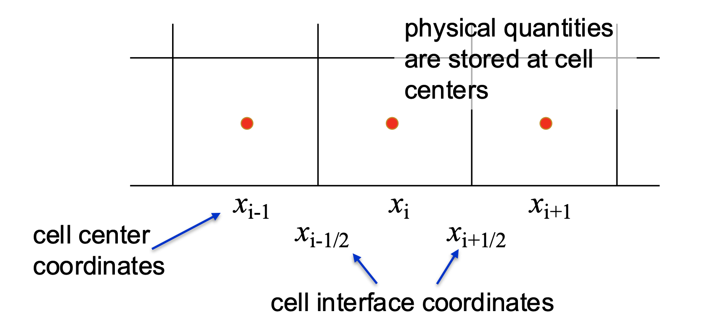
Figure 7: Cartesian 網格。
考慮此雙曲線型的線性對流方程式 (linear advection equation):
\[ \frac{\partial u}{\partial t} + A\frac{\partial u}{\partial x} = 0,\quad A > 0 \]
其中 \(A\) 為常數。若初始條件為 \(u_0(x)\)，其解析解為沿著特徵線 (characteristic curve) 傳遞的形式：
\[ X(t) = X_0 + At \Rightarrow u(x,t) = u_0(x - At) \]
這說明波形會以速度 \(A\) 向右 (若 \(A>0\)) 平移，而不改變其形狀，如圖 8 所示。
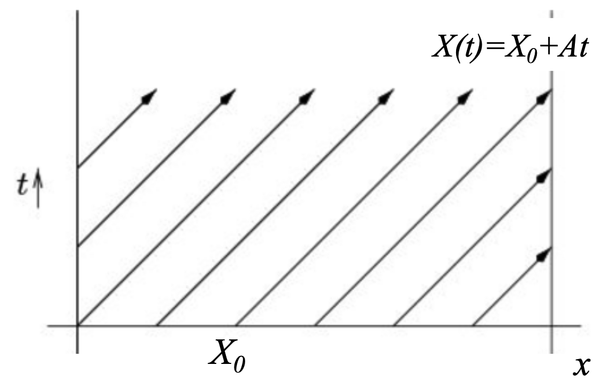
Figure 8: 線性對流方程式之特徵線。
如使用 FTBS (Forward Time, Backward Space) 之差分法，即一階 upwind 顯式差分法，對此線性對流方程式進行離散，可得：
\[ u_i^{n+1} = u_i^n - \frac{A \Delta t}{\Delta x}(u_i^n - u_{i-1}^n) \]
其中 \(u_i^n = u(x_i, t_n)\), 而
\[ x_i = x_0 + i\Delta x,\quad i = 0, 1, 2, \dots \] \[ t_n = t_0 + n\Delta t,\quad n = 0, 1, 2, \dots \]
代表在時間–空間網格中編號為 \((i,n)\) 處的解，如圖 9。
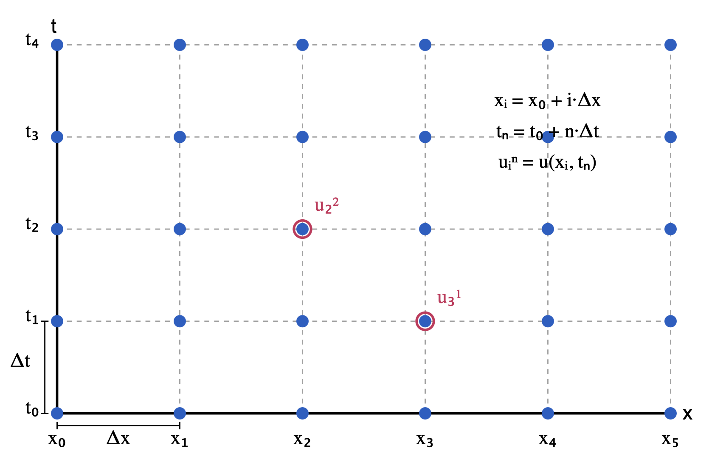
Figure 9: 均勻網格示意圖。
2.3. 常見離散方法比較
以線性對流方程式為例：
\[ \frac{\partial u}{\partial t} + A\frac{\partial u}{\partial x} = 0 \]
2.3.1. FTCS (Forward-Time Central-Space)
時間前進、空間中心差分法：
\[ \frac{u_i^{n+1} - u_i^n}{\Delta t} = -A \left( \frac{u_{i+1}^n - u_{i-1}^n}{2\Delta x} \right) \]
- 一階時間精度
- 二階空間精度
- 無條件不穩定！無論時間步如何小，解都會發散。
import numpy as np
import matplotlib.pyplot as plt
# 參數設定
A = 1.0
nx = 100
x = np.linspace(0, 1, nx, endpoint=False)
dx = x[1] - x[0]
cfl = 0.8
dt = cfl * dx / A
nt = 100
# 初始條件：Gaussian
u0 = np.exp(-100 * (x - 0.5)**2)
u = u0.copy()
us = [u.copy()]
# FTCS 方法
for n in range(nt):
u_new = np.zeros_like(u)
u_new[1:-1] = u[1:-1] - 0.5 * cfl * (u[2:] - u[:-2])
# 週期邊界條件
u_new[0] = u[0] - 0.5 * cfl * (u[1] - u[-1])
u_new[-1] = u[-1] - 0.5 * cfl * (u[0] - u[-2])
u = u_new
us.append(u.copy())
# 繪圖
plt.figure(figsize=(8, 4))
plt.plot(x, u0, label='Initial', linestyle='--')
plt.plot(x, u, label='FTCS (Unstable)', linewidth=2)
plt.xlabel("x")
plt.ylabel("u")
plt.title(f"Linear Advection: FTCS Method, CFL = {cfl}")
plt.legend()
plt.grid(True)
plt.tight_layout()
plt.savefig("FTCS_Method.png")
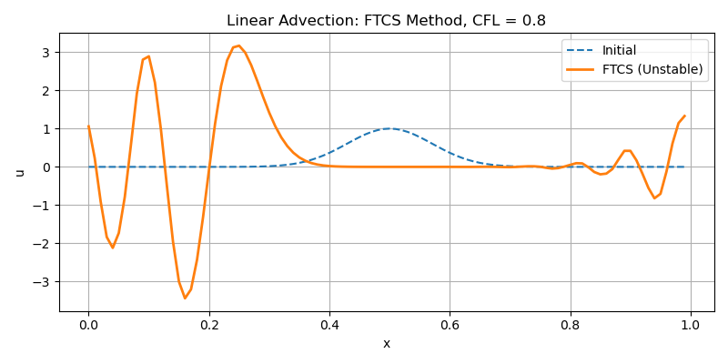
2.3.2. Lax-Friedrichs (LF) 方法
\[ \frac{u_i^{n+1} - \left( u_{i-1}^n + u_{i+1}^n \right)/2}{\Delta t} = -A \left( \frac{u_{i+1}^n - u_{i-1}^n}{2\Delta x} \right) \]
- 時間差分項是以前一層時間的空間平均作為參考，可在 FTCS 基礎上加上數值黏滯效應，穩定但非常擴散。
import numpy as np
import matplotlib.pyplot as plt
# 參數設定
A = 1.0 # advection speed
nx = 100 # 空間節點數
x = np.linspace(0, 1, nx, endpoint=False)
dx = x[1] - x[0]
cfl = 0.8
dt = cfl * dx / A
nt = 100 # 時間步數
# 初始條件：Gaussian distribution
u0 = np.exp(-100 * (x - 0.5)**2)
u = u0.copy()
# 儲存解的演化
us = [u.copy()]
# Lax-Friedrichs method 更新式
for n in range(nt):
u_new = np.zeros_like(u)
u_new[1:-1] = 0.5 * (u[2:] + u[:-2]) - 0.5 * cfl * (u[2:] - u[:-2])
# 週期邊界條件
u_new[0] = 0.5 * (u[1] + u[-1]) - 0.5 * cfl * (u[1] - u[-1])
u_new[-1] = 0.5 * (u[0] + u[-2]) - 0.5 * cfl * (u[0] - u[-2])
u = u_new
us.append(u.copy())
# 畫出初始與最終解
plt.figure(figsize=(8, 4))
plt.plot(x, u0, label='Initial', linestyle='--')
plt.plot(x, u, label='Lax-Friedrichs', linewidth=2)
plt.xlabel("x")
plt.ylabel("u")
plt.title(f"Linear Advection: Lax-Friedrichs Method, CFL = {cfl}")
plt.legend()
plt.grid(True)
plt.tight_layout()
plt.savefig("L-F_Method.png")
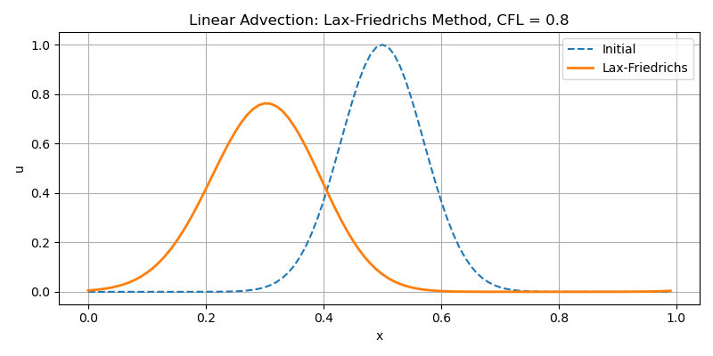
2.3.3. Upwind 方法（迎風格式）
- 根據訊息傳播方向（由 \(A\) 的符號決定）選擇差分方向
- 穩定，擴散較小
- 僅一階精度，但能保證物理解的正確性
import numpy as np
import matplotlib.pyplot as plt
# 參數設定
A = 1.0
nx = 100
x = np.linspace(0, 1, nx, endpoint=False)
dx = x[1] - x[0]
cfl = 0.8
dt = cfl * dx / A
nt = 100
# 初始條件：Gaussian
u0 = np.exp(-100 * (x - 0.5)**2)
u = u0.copy()
us = [u.copy()]
# Upwind 方法（FTBS）
for n in range(nt):
u_new = np.zeros_like(u)
u_new[1:] = u[1:] - cfl * (u[1:] - u[:-1])
# 週期邊界條件
u_new[0] = u[0] - cfl * (u[0] - u[-1])
u = u_new
us.append(u.copy())
# 繪圖
plt.figure(figsize=(8, 4))
plt.plot(x, u0, label='Initial', linestyle='--')
plt.plot(x, u, label='Upwind (FTBS)', linewidth=2)
plt.xlabel("x")
plt.ylabel("u")
plt.title(f"Linear Advection: Upwind Method, CFL = {cfl}")
plt.legend()
plt.grid(True)
plt.tight_layout()
plt.savefig("Upwind_Method.png")
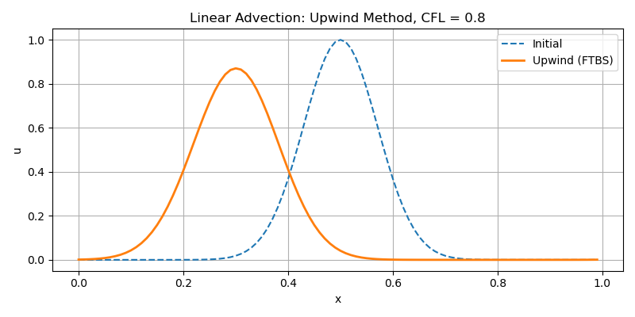
2.3.4. Lax-Wendroff 方法
\[ \frac{u_i^{n+1} - u_i^n}{\Delta t} = -A \left( \frac{u_{i+1}^n - u_{i-1}^n}{2\Delta x} \right)+ \frac{A^2 \Delta t}{2} \left( \frac{u_{i+1}^n - 2u_i^n + u_{i-1}^n}{\Delta x^2} \right) \]
- 二階精度，但會在不連續點產生振盪（Gibbs 現象）
- 在平滑區域有相位誤差
import numpy as np
import matplotlib.pyplot as plt
# 參數設定
A = 1.0
nx = 100
x = np.linspace(0, 1, nx, endpoint=False)
dx = x[1] - x[0]
cfl = 0.8
dt = cfl * dx / A
nt = 100
# 初始條件：Gaussian
u0 = np.exp(-100 * (x - 0.5)**2)
u = u0.copy()
us = [u.copy()]
# Lax-Wendroff 方法
for n in range(nt):
u_new = np.zeros_like(u)
u_new[1:-1] = (
u[1:-1]
- 0.5 * cfl * (u[2:] - u[:-2])
+ 0.5 * cfl**2 * (u[2:] - 2 * u[1:-1] + u[:-2])
)
# 週期邊界條件
u_new[0] = (
u[0]
- 0.5 * cfl * (u[1] - u[-1])
+ 0.5 * cfl**2 * (u[1] - 2 * u[0] + u[-1])
)
u_new[-1] = (
u[-1]
- 0.5 * cfl * (u[0] - u[-2])
+ 0.5 * cfl**2 * (u[0] - 2 * u[-1] + u[-2])
)
u = u_new
us.append(u.copy())
# 繪圖
plt.figure(figsize=(8, 4))
plt.plot(x, u0, label='Initial', linestyle='--')
plt.plot(x, u, label='Lax-Wendroff', linewidth=2)
plt.xlabel("x")
plt.ylabel("u")
plt.title(f"Linear Advection: Lax-Wendroff Method, CFL = {cfl}")
plt.legend()
plt.grid(True)
plt.tight_layout()
plt.savefig("L-W_Method.png")
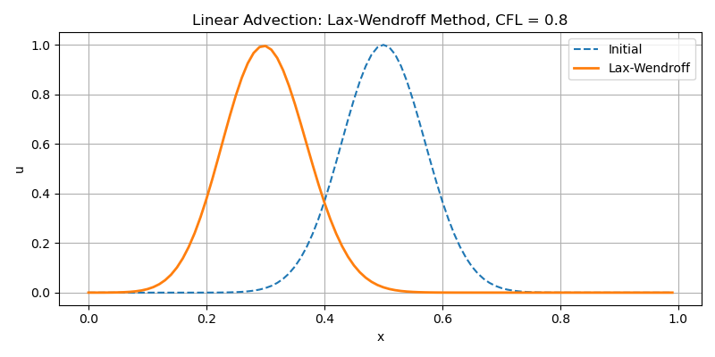
3. 有限體積法 (Finite Volume Method)
3.1. FVM vs. FDM
有限體積法 (Finite Volume Method) 使用積分的形式來滿足守衡律 (圖 10):
\[ U_i^n = \frac{1}{\Delta x}\int_{x_{i-1/2}}^{x_{i+1/2}} u(x, t_n)\,dx \]
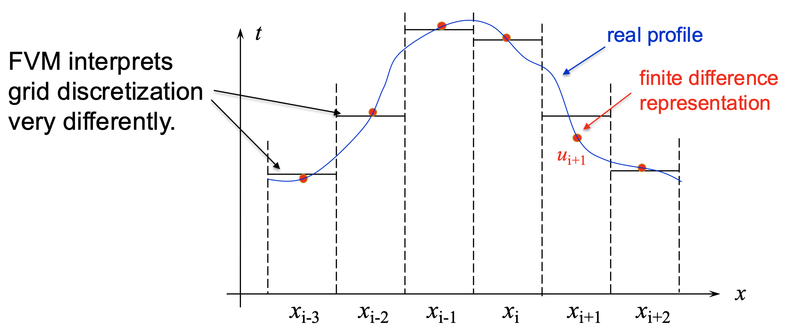
Figure 10: FVM 與 FDM 的比較。
在有限體積法中，物理量（例如密度、動量、能量等）通常定義在 cell center，而 flux（通量）則定義在 cell interface。對於一純量守恆通式 \(\partial_t u + \partial_x f(u)=0\) 而言，其離散方式為 (圖 11)：
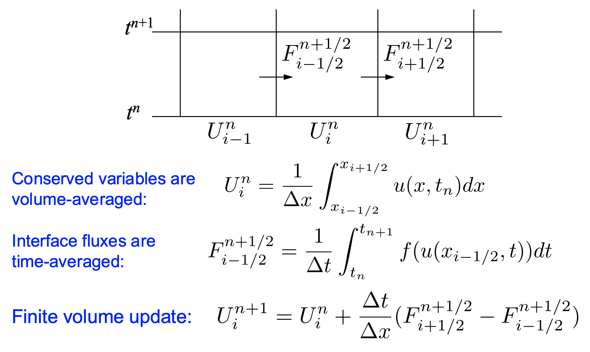
Figure 11: FVM 的離散方式。
4. CFL 條件之實例說明
4.1. CFL 條件（Courant-Friedrichs-Lewy Condition）
CFL 條件為數值穩定性的一項基本準則。
- 數值方法僅當其資訊傳遞範圍包含 PDE 的實際資訊傳遞範圍時，才會收斂。
- 換句話說：時間步長 \(\Delta t\) 需足夠小，使得波不會在一個時間步中穿越多個 cell。
對於線性對流方程式 \(\partial_t u + A \partial_x u = 0\)，需滿足
\[ \Delta t = C\frac{\Delta x}{A}, \text{where } C \le 1 \]
或
\[ C = \frac{A \Delta t}{\Delta x} \leq 1 \]
其中 \(C\) 稱為 Courant number (或 CFL number)。若 \(C > 1\)，則會導致不穩定，數值結果無法收斂。 如圖 12 所示，\(\Delta t\) 必須足夠小，如此資訊才不會在一個時步中傳遞超過一個網格。
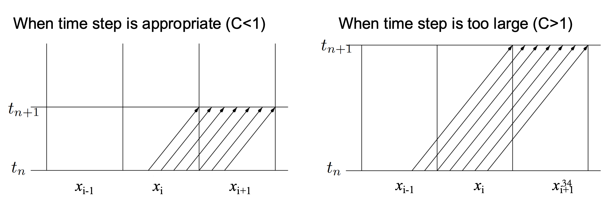
Figure 12: Courant number 的意義。
4.2. 一維對流問題
為了更具體了解 CFL 條件的實際意義，以下透過一個簡單的一維線性對流問題，說明不同 CFL 數值下的數值解行為。
考慮一維對流方程式：
\[ \frac{\partial u}{\partial t} + a \frac{\partial u}{\partial x} = 0, \quad a > 0 \]
初始條件為 \(u_0 = u(x, 0) = \exp[-100(x - 0.5)^2]\), 邊界條件則為週期性邊界。 解析解則為 \(u(x,t)=u_0 (x−at)\)。
其物理解釋可代表流體中熱量或濃度隨時間傳輸，解的正確性與穩定性受到 CFL 條件的嚴格限制。
4.3. 數值方法
使用 FTBS（Forward Time, Backward Space）方法，即一階 upwind 顯式格式：
\[ u_i^{n+1} = u_i^n - \frac{a\Delta t}{\Delta x}(u_i^n - u_{i-1}^n) \]
CFL 條件為：
\[ C = \frac{a \Delta t}{\Delta x} \leq 1 \]
若 \(C>1\)，即表示波在單一時間步內跨越超過一格網格，數值解將不再穩定。
4.4. Python 程式碼範例
import numpy as np
import matplotlib.pyplot as plt
# 模型參數
a = 1.0
L = 1.0
nx = 100
x = np.linspace(0, L, nx, endpoint=False)
dx = x[1] - x[0]
cfl_values = [0.5, 0.8, 1.0, 1.2]
T_final = 1.0 # 統一最終時間
# 初始條件（Gaussian）
u0 = np.exp(-100 * (x - 0.5)**2)
# 圖1：數值解比較
fig1, ax1 = plt.subplots(figsize=(10, 4))
ax1.plot(x, u0, 'k--', label='Initial')
errors = [] # 儲存誤差
for cfl in cfl_values:
dt = cfl * dx / a
nt = int(np.ceil(T_final / dt))
dt = T_final / nt # 微調步長
u = u0.copy()
for n in range(nt):
u_new = u.copy()
u_new[1:] = u[1:] - a * dt / dx * (u[1:] - u[:-1])
u_new[0] = u[0] - a * dt / dx * (u[0] - u[-1]) # 週期邊界
u = u_new
# 畫出數值解
ax1.plot(x, u, label=f'CFL = {cfl:.1f}')
# 計算誤差（與初始值比較）
error = np.sqrt(np.mean((u - u0)**2))
errors.append(error)
ax1.set_title(f"FTBS at t = {T_final} for Different CFL")
ax1.set_xlabel("x")
ax1.set_ylabel("u")
ax1.legend()
ax1.grid(True)
plt.tight_layout()
plt.savefig("FVM_CFL.png")
# 圖2：誤差 vs CFL 數
fig2, ax2 = plt.subplots(figsize=(6, 4))
ax2.plot(cfl_values, errors, 'o-', linewidth=2)
ax2.set_xlabel("CFL Number")
ax2.set_ylabel("L2 Error")
ax2.set_title("L2 Error vs CFL Number (FTBS at t = 1.0)")
ax2.grid(True)
plt.tight_layout()
plt.savefig("FVM_CFL_Error.png")
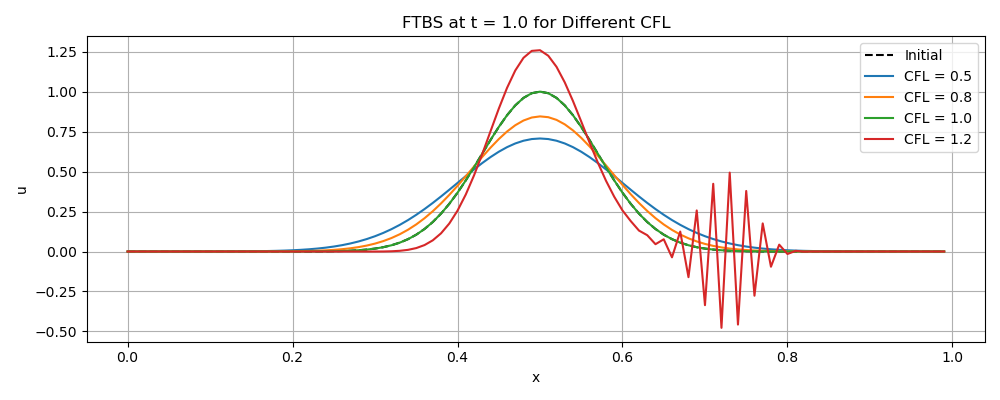
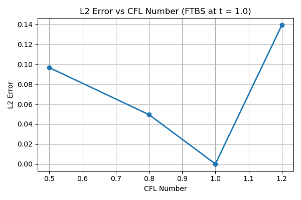
4.5. 討論
為何在 FTBS 方法中，CFL 越小誤差越大？
原因關鍵：數值擴散的大小與 CFL 成正比。
4.5.1. 一階 Upwind/FTBS 方法的誤差形式
對於線性對流方程 \( \frac{\partial u}{\partial t} + a \frac{\partial u}{\partial x} = 0 \)，FTBS 方法的離散式為：
\[ u_i^{n+1} = u_i^n - \frac{a \Delta t}{\Delta x}(u_i^n - u_{i-1}^n) \]
這其實相當於精確方程式加上一項人工黏滯項（數值擴散）的近似：
\[ \frac{\partial u}{\partial t} + a \frac{\partial u}{\partial x} = \underbrace{\nu_\text{num} \frac{\partial^2 u}{\partial x^2}}_{\text{數值擴散項}} \]
其中： \[ \nu_\text{num} = \frac{a \Delta x}{2} (1 - \text{CFL}) \]
這是透過局部截斷誤差（modified equation analysis）推導得出。
4.5.2. 結論
- 當 CFL 趨近 1 時： \[ \nu_\text{num} \rightarrow 0 \] → 數值解幾乎是無擴散的 → 誤差小
- 當 CFL 趨近 0 時： \[ \nu_\text{num} \rightarrow \frac{a \Delta x}{2} \] → 數值擴散最大 → 解嚴重模糊 → 誤差大
| 現象 | 原因 |
|---|---|
| CFL 小時誤差大 | 數值擴散係數 \( \nu_\text{num} \) 變大 |
| 解變得模糊、波峰變矮 | 擴散項 \( \frac{\partial^2 u}{\partial x^2} \) 貢獻變大 |
| 最佳精度出現在 CFL → 1 | 擴散項趨近於零 |
4.5.3. 延伸問題
- 這也說明了: "穩定 ≠ 精確" ，穩定只確保不發散，但數值擴散會拖垮解析度。
- 若需同時保穩定與精度，可改用：
- 二階格式（如 Lax-Wendroff、MUSCL）
- 有限制器的 Godunov 法（如 PLM + limiter）
4.6. FTBS 數值擴散項之推導
目標：從 FTBS 離散式： \[ u_i^{n+1} = u_i^n - \frac{a \Delta t}{\Delta x} (u_i^n - u_{i-1}^n) \]
推導出對應的連續近似形式（modified equation）： \[ \frac{\partial u}{\partial t} + a \frac{\partial u}{\partial x} = \nu_\text{num} \frac{\partial^2 u}{\partial x^2} + \text{(高階項)} \]
4.6.1. 步驟 1：泰勒展開時間與空間項
時間方向（LHS）：
\[ u_i^{n+1} = u(x_i, t + \Delta t) = u(x_i, t) + \Delta t \frac{\partial u}{\partial t} + \frac{\Delta t^2}{2} \frac{\partial^2 u}{\partial t^2} + \cdots \]
空間方向（RHS）：
\[ u_i^n - u_{i-1}^n = u(x_i, t) - u(x_i - \Delta x, t) \]
展開：
\[ u(x_i - \Delta x, t) = u(x_i, t) - \Delta x \frac{\partial u}{\partial x} + \frac{\Delta x^2}{2} \frac{\partial^2 u}{\partial x^2} - \frac{\Delta x^3}{6} \frac{\partial^3 u}{\partial x^3} + \cdots \]
所以：
\[ u_i^n - u_{i-1}^n = \Delta x \frac{\partial u}{\partial x} - \frac{\Delta x^2}{2} \frac{\partial^2 u}{\partial x^2} + \cdots \]
4.6.2. 步驟 2：代入 FTBS 離散式
\[ u(x_i, t) + \Delta t \frac{\partial u}{\partial t} + \cdots = u(x_i, t) - \frac{a \Delta t}{\Delta x} \left( \Delta x \frac{\partial u}{\partial x} - \frac{\Delta x^2}{2} \frac{\partial^2 u}{\partial x^2} + \cdots \right) \]
消去 \( u(x_i, t) \) 後兩邊同減，並除以 \( \Delta t \)：
\[ \frac{\partial u}{\partial t} = -a \frac{\partial u}{\partial x} + \frac{a \Delta x}{2} \frac{\partial^2 u}{\partial x^2} + \cdots \]
4.6.3. 結論：Modified Equation
\[ \boxed{ \frac{\partial u}{\partial t} + a \frac{\partial u}{\partial x} = \underbrace{\frac{a \Delta x}{2}(1 - \text{CFL})}_{\nu_{\text{num}}} \frac{\partial^2 u}{\partial x^2} + \text{(高階項)} } \]
其中：
- \( \text{CFL} = \frac{a \Delta t}{\Delta x} \)
- \( \nu_{\text{num}} \) 為數值擴散係數（依 CFL 而變）
4.6.4. 小結
- FTBS 是顯式、一階、穩定的 upwind 法，但伴隨「內建」擴散項
- 擴散項會模糊解，特別是在 CFL 遠離 1 時（例如 0.3）
- 最佳精度出現在 CFL ≈ 1
5. FVM 進階
5.1. Godunov 方法概述（Godunov Method）
Godunov 方法是有限體積法的一種核心演算法，由 S. K. Godunov 於 1959 年提出，最初用於解決氣體動力學中的非線性守恆律問題。
其基本精神在於：
- 重建（Reconstruction）
- 將每個 cell 的平均值重建為一段函數。
- 最簡單為常數重建（piecewise constant），亦可使用線性或更高階方式。
- 演化（Evolution）
- 在每個 cell interface 上，利用左右兩側的資料設定 Riemann 問題。
- 求解該 Riemann 問題以獲得通量（flux）。
- 平均（Averaging）
將 flux 用來更新 cell 的平均值：
\[ U_i^{n+1} = U_i^n - \frac{\Delta t}{\Delta x} (F_{i+1/2} - F_{i-1/2}) \]
這三步驟構成了一個完整的 time step。
5.1.1. 特點與優點：**
- 對震波、接觸不連續有良好解析能力。
- 自然內建 upwind 概念，可避免不實振盪。
- 屬於保守性格式（conservative scheme），確保整體守恆量的物理正確性。
5.1.2. 低階情況：**
若使用 piecewise constant 重建（又稱 donor cell method），Godunov 方法在解線性對流方程時與 upwind 方法一致。
5.1.3. 實作考量：**
- 解 Riemann 問題通常不需完全精確，僅需近似解（approximate Riemann solvers）即可。
- 非線性問題中常使用 Roe solver、HLL、HLLC 等方法。
- 在高階版本中，會搭配 slope limiter，形成二階精度的 Godunov 方法。
在後續章節中，我們將展示如何將此法應用於非線性方程（如 Burgers’ equation）與 MHD 模擬。
5.2. 提升精度的方法（Toward Higher Order Accuracy）
為了提升 Godunov 方法的精度，我們可以改採較高階的函數重建，例如：
- **線性重建（Piecewise Linear Method, PLM）**：每個 cell 內以斜率描述變化。
- **拋物重建（Piecewise Parabolic Method, PPM）**：每個 cell 內使用二次函數描述。
舉例：對於線性對流問題，若使用線性重建搭配 Godunov 法，即為高階迎風法。
如何選擇斜率？
若不加限制（如中心差分），雖然為二階精度，但會產生不實振盪（overshoot）。
為了解決此問題，引入「斜率限制器」（slope limiter），使解保持單調（monotonicity-preserving）：
- 常見限制器：Minmod、Van Leer、MC（monotonized central）等
5.3. 說明補充：多維問題中的 CFL 條件**
在二維、三維問題中，不同方向皆有訊息傳遞速度，應取所有方向的最大波速來決定時間步：
\[ \Delta t \leq \min \left( \frac{\Delta x}{|v| + c_f}, \frac{\Delta y}{|v| + c_f}, \dots \right) \]
其中 \(c_f\) 為最速磁聲波速度（fast magnetosonic speed），此在 MHD 模擬中特別重要。
例如 Athena++ 使用 van Leer 積分器時，CFL 限制如下：
- 一維問題：\(C < 1\)
- 二維與三維問題：\(C < 0.5\)
接下來將示範非線性守恆律（如 Burgers’ Equation）與 MHD 方程式在有限體積法中的處理。
5.4. 非線性守恆律：以 Burgers' 方程為例（Nonlinear Conservation Law）
線性方程的特性在於特徵線不交會，解為平移變化；而非線性守恆律的特點在於特徵線會交會，形成震波、激波等現象。
最簡單的非線性守恆律範例為 **Burgers’ equation**：
\[ \frac{\partial u}{\partial t} + \frac{1}{2} \frac{\partial u^2}{\partial x} = 0 \]
此式亦可寫成保守形式：
\[ \frac{\partial u}{\partial t} + \frac{\partial f(u)}{\partial x} = 0, \quad \text{其中 } f(u) = \frac{1}{2}u^2 \]
5.4.1. 特性與物理解釋：**
- 初始速度場的高峰會以較快速度傳播，因此在某時刻會與較慢點交會，形成震波（shock）。
- 數值方法需能正確捕捉這種不連續解。
5.4.2. 解法：Godunov 方法的應用：**
對於此非線性守恆方程，我們可使用 Godunov 方法：
- 重建： 將每個 cell 內的 \(u\) 值視為常數。
界面問題： 在 cell interface 上構造 Riemann 問題 (左右兩側的 \(u_L\), \(u_R\))，解析非線性通量：
\[ f^* = \begin{cases} \min(f(u_L), f(u_R)) & \text{若 } u_L > u_R \ f(u_L) & \text{若 } u_L = u_R \ f(u_R) & \text{若 } u_L < u_R \end{cases} \]
這是 Burgers’ 方程的解析 Riemann 解。
更新公式：
\[ u_i^{n+1} = u_i^n - \frac{\Delta t}{\Delta x}(f^*_{i+1/2} - f^*_{i-1/2}) \]
5.4.3. 初始條件示例：**
在 \([0,1]\) 區間上設：
\[ u(x,0) = 1 - 0.5 \sin(2\pi x) \]
並採用週期性邊界條件。
此初始條件將逐漸演化出非線性波形並形成震波，數值解應能再現此現象而無不實振盪。
5.4.4. 觀察重點：**
- 若用高階格式但無斜率限制器，容易產生振盪。
- Godunov 方法能自然處理震波，但解的精度受限於重建階數。
接下來將介紹如何處理向量形式的系統（例如一維 MHD 方程），進一步探索多變量守恆律的有限體積處理方式。